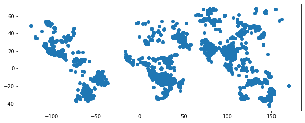

Fire Plot¶
[4]:
import pandas as pd
import folium
import geopandas as gpd
import numpy as np
import json
[9]:
# !wget https://firms.modaps.eosdis.nasa.gov/data/active_fire/c6/shapes/zips/MODIS_C6_Global_24h.zip
# !mv MODIS_C6_Global_24h.zip ../data/shapeFiles/world
--2020-05-15 13:48:46-- https://firms.modaps.eosdis.nasa.gov/data/active_fire/c6/shapes/zips/MODIS_C6_Global_24h.zip
Resolving firms.modaps.eosdis.nasa.gov (firms.modaps.eosdis.nasa.gov)... 2001:4d0:241a:40c0::34, 198.118.194.34
Connecting to firms.modaps.eosdis.nasa.gov (firms.modaps.eosdis.nasa.gov)|2001:4d0:241a:40c0::34|:443... connected.
HTTP request sent, awaiting response... 200 OK
Length: 272036 (266K) [application/zip]
Saving to: ‘MODIS_C6_Global_24h.zip’
MODIS_C6_Global_24h 100%[===================>] 265.66K 218KB/s in 1.2s
2020-05-15 13:48:49 (218 KB/s) - ‘MODIS_C6_Global_24h.zip’ saved [272036/272036]
Data: https://earthdata.nasa.gov/earth-observation-data/near-real-time/firms/active-fire-data
[12]:
loc = '../data/shapeFiles/world/'
!unzip {loc}MODIS_C6_Global_24h.zip -d {loc}
Archive: ../data/shapeFiles/world/MODIS_C6_Global_24h.zip
extracting: ../data/shapeFiles/world/MODIS_C6_Global_24h.cpg
inflating: ../data/shapeFiles/world/MODIS_C6_Global_24h.dbf
inflating: ../data/shapeFiles/world/MODIS_C6_Global_24h.prj
inflating: ../data/shapeFiles/world/MODIS_C6_Global_24h.shp
inflating: ../data/shapeFiles/world/MODIS_C6_Global_24h.shx
[15]:
gdf = gpd.read_file("../data/shapeFiles/world/MODIS_C6_Global_24h.shp")
ax = gdf.plot(figsize=(10, 10))
gdf = gdf[['ACQ_DATE', 'ACQ_TIME', 'LATITUDE','LONGITUDE','FRP']]
pd.to_datetime(gdf['ACQ_DATE'] + ' ' + gdf['ACQ_TIME'])
gdf
[15]:
| ACQ_DATE | ACQ_TIME | LATITUDE | LONGITUDE | FRP | |
|---|---|---|---|---|---|
| 0 | 2020-05-14 | 0015 | -22.467 | 148.923 | 10.8 |
| 1 | 2020-05-14 | 0015 | -22.468 | 148.933 | 9.8 |
| 2 | 2020-05-14 | 0015 | -23.314 | 147.689 | 9.2 |
| 3 | 2020-05-14 | 0015 | -23.316 | 147.700 | 9.4 |
| 4 | 2020-05-14 | 0015 | -24.127 | 151.437 | 5.2 |
| ... | ... | ... | ... | ... | ... |
| 7935 | 2020-05-15 | 0545 | 15.917 | 76.710 | 16.5 |
| 7936 | 2020-05-15 | 0545 | 15.862 | 76.731 | 20.0 |
| 7937 | 2020-05-15 | 0545 | 15.445 | 76.708 | 10.4 |
| 7938 | 2020-05-15 | 0545 | 11.869 | 79.639 | 34.2 |
| 7939 | 2020-05-15 | 0545 | 9.268 | 78.783 | 24.6 |
7940 rows × 5 columns

[20]:
from folium.plugins import HeatMapWithTime
fire_map = folium.Map(width = 800 ,height=660,
zoom_start=7, control_scale = True,
tiles="Stamen Terrain",min_lat=6, max_lat=105, min_lon=68, max_lon=97,
)
HeatMapWithTime(data=gdf.groupby(['LATITUDE', 'LONGITUDE']).sum().reset_index().values.tolist(),
radius=8).add_to(fire_map)
fire_map.save('fire_map.html')
fire_map
---------------------------------------------------------------------------
NameError Traceback (most recent call last)
<ipython-input-20-e9e97c803b0b> in <module>
5 tiles="Stamen Terrain",min_lat=6, max_lat=105, min_lon=68, max_lon=97,
6 )
----> 7 HeatMap(data=gdf.groupby(['LATITUDE', 'LONGITUDE']).sum().reset_index().values.tolist(),
8 radius=8).add_to(fire_map)
9
NameError: name 'HeatMap' is not defined
[ ]: